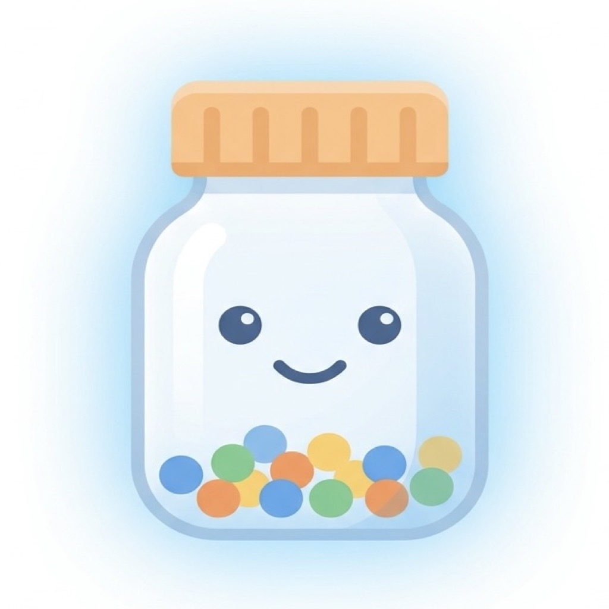

Never miss a dose.
DoseTrack ("we," "us," "the app") is a medication reminder app made by Neurotrocity, an independent developer. This policy explains what information DoseTrack collects, how it's used, and the choices you have. It is written in plain language on purpose.
Your medications, schedules, dose history, notes, bottle photos, E-Script images, profile name and app settings are stored only in the app's local database on your iPhone. DoseTrack does not transmit them. If you create a backup file (Settings → Backup & Restore), it goes only where you choose to send it using the share sheet. That is you moving your own data, not us collecting it.
DoseTrack does not use HealthKit and does not collect your contacts or browsing history. The camera is used only when you scan a medication box, and the image is processed on your device.
DoseTrack is funded by a single banner ad shown on the Today screen, served by Google Mobile Ads. When an ad is requested, the Google SDK collects and sends information to Google. Google's SDK declares the following data types:
This information is collected by Google's SDK, not by DoseTrack's own code, and is handled under Google's own privacy policy. None of your medication information is ever passed to Google or into an ad request.
Every ad request DoseTrack makes is set to non-personalised. DoseTrack does not show Apple's App Tracking Transparency prompt and does not use ads to follow you across other companies' apps and websites. We do not sell your data.
If you are in the European Economic Area or the UK, DoseTrack shows Google's consent form on first use and shows no ad until you have answered it. If you decline, you see no ads. You can review or withdraw your choice at any time from Settings → Ad Privacy Options (shown when it applies to you).
Medication reminders are scheduled on your device. They are local notifications and do not pass through any DoseTrack server.
Your medication data lives only on your device. You can delete all of it at any time from Settings → Delete All Data, or by deleting the app. DoseTrack holds no copy on any server, so there is nothing for us to delete on your behalf. Data held by Google as part of ad delivery is subject to Google's own policy and controls.
DoseTrack is rated 4+ and is not directed at children. We do not knowingly collect personal information from children under 13. If you believe a child has provided us with personal information, contact us.
Your medication data is stored in the app's sandboxed local database on your device and protected by your device's own security (passcode and encryption). Network traffic from the ad SDK uses encrypted connections. No method of electronic storage or transmission is 100% secure.
If we make material changes we will update the "Last updated" date and, where appropriate, tell you in the app. Version 2.1 removed accounts, cloud sync and caregiver sharing, and version 3.0 made the app free and ad-supported; earlier versions of this policy described accounts and a backend that no longer exist.
Questions about this policy or your data? Email us at 4032332@gmail.com.
DoseTrack is a reminder tool, not medical advice. Always follow your healthcare provider's instructions.